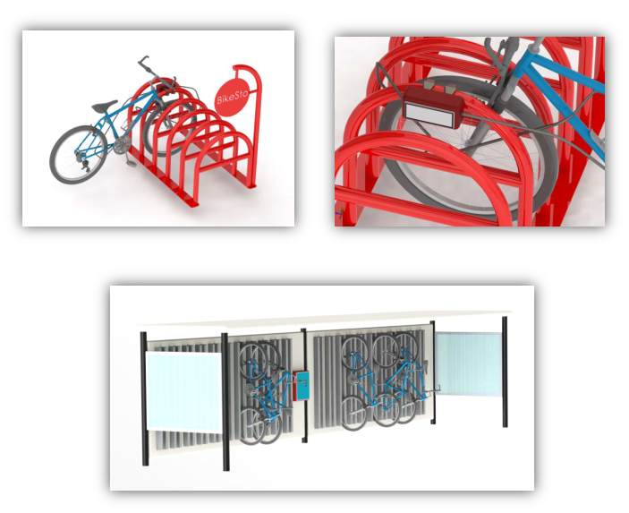

BikeSto, a city planning company idea
Teammates:
Kevin Soulard, Robert McBride, Michael Romanko
Professors:
George Schneider, John Nesheim
Photos
 Small clamp on bike storage unit, and high capacity bike store
Summary
Our background as engineers and a shared love for bicycles led us to create BikeSto, a bike storage startup idea for an entrepreneurship course in the Johnson School. The product was a system of electronic bike locks that anyone can use anywhere. They mount to existing bike rack infrastructure, and provided distributed docks to any type of bike - not just city provided bikes. The reason this works is that, as commuters pursue safer and consequently heavier locks, the convenience of biking as a whole drops precipitously. The safer the bike lock, the more cumbersome. The inverse relationship of safety and convenience is one of the significant mitigating factors of true bike proliferation.